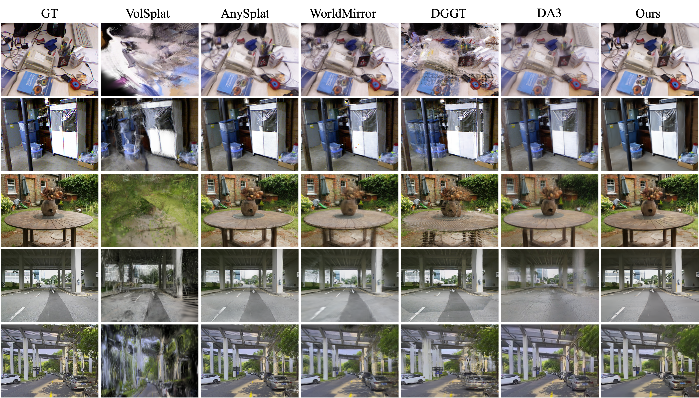
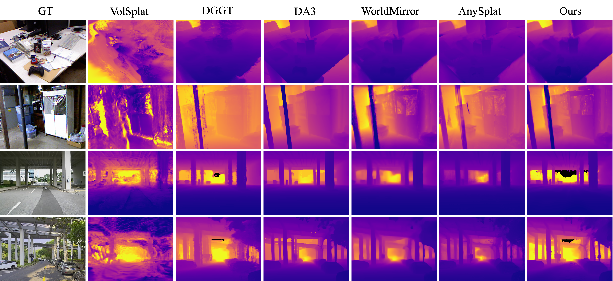
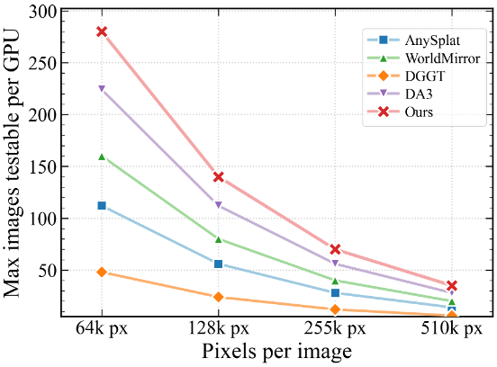
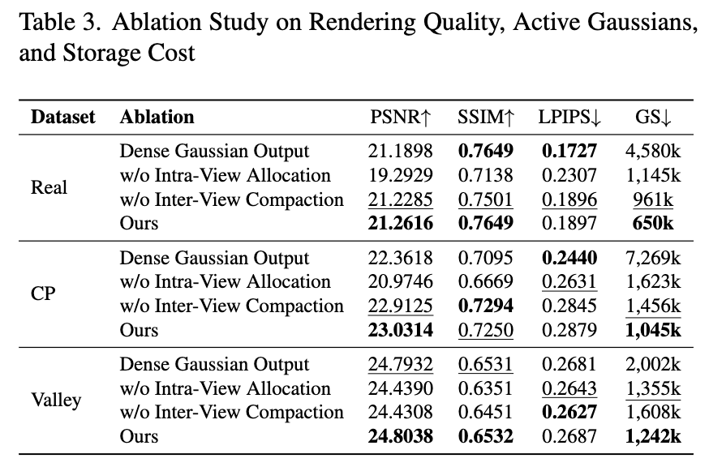

Abstract
Feed-forward 3D Gaussian Splatting enables efficient scene reconstruction
by directly predicting Gaussian representations from sparse input images.
However, existing approaches generate primitives according to observation
density rather than intrinsic scene complexity, resulting in redundant
Gaussian representations.
We propose ReCo-Splat, a compact feed-forward 3DGS framework that
constructs scene-adaptive Gaussian representations from sparse unposed images
in a single forward pass.
ReCo-Splat introduces two complementary strategies:
Intra-View Gaussian Allocation, which adaptively distributes Gaussian
candidates according to local appearance and geometry complexity, and
Inter-View Gaussian Compaction, which suppresses repeated surface
explanations through redundancy-aware opacity competition.
Why Compact Feed-forward 3DGS?
Existing feed-forward Gaussian reconstruction methods often couple the number
of primitives with input resolution and view count. However, increasing
observations does not always introduce new scene information.
ReCo-Splat analyzes redundancy from two perspectives:
Intra-view Over-allocation
Dense pixel-wise prediction assigns unnecessary Gaussians to simple regions.
Inter-view Redundancy
Multiple views may repeatedly explain the same local surface.

Method Overview

Given sparse unordered images, ReCo-Splat first extracts geometry-aware
and appearance-aware features.
The Gaussian head predicts dense Gaussian attributes, followed by:
-
Complexity-guided quadtree Gaussian allocation
-
Scale compensation for maintaining spatial coverage
-
Cross-view opacity competition and pruning
Intra-View Gaussian Allocation
Gaussian primitives are allocated according to local RGB-depth complexity.
Low-complexity regions receive fewer primitives, while boundaries and
high-frequency regions preserve detailed representations.
Inter-View Gaussian Compaction
Instead of directly merging Gaussians, ReCo-Splat encourages redundant
surface explanations to compete for opacity during training.
At inference time, low-opacity redundant Gaussians are removed.
Novel View Synthesis

Geometry Reconstruction

Compactness and Scalability
653k-982k
Active Gaussians
74%
Reduction compared with DA3/DGGT
70
Input images on RTX4090

Ablation Study

BibTeX
@article{recosplat2026,
title={ReCo-Splat: Redundancy-aware Compact Feed-forward Gaussian Splatting},
author={Anonymous},
journal={CVPR},
year={2026}
}